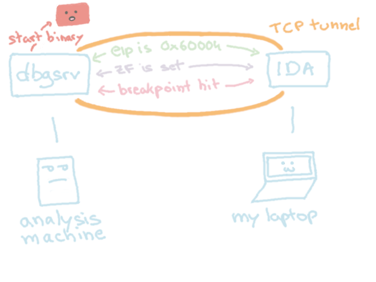
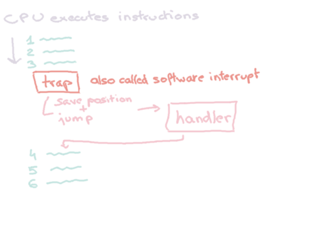
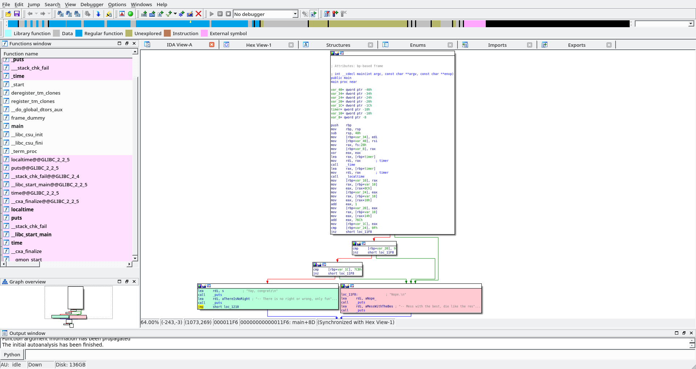
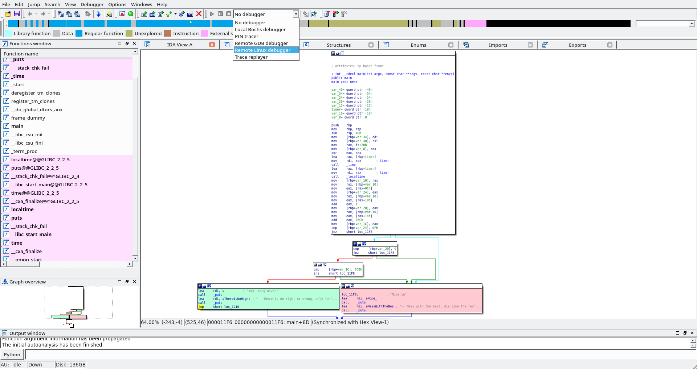
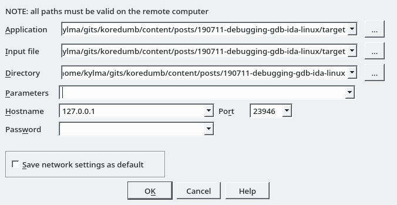
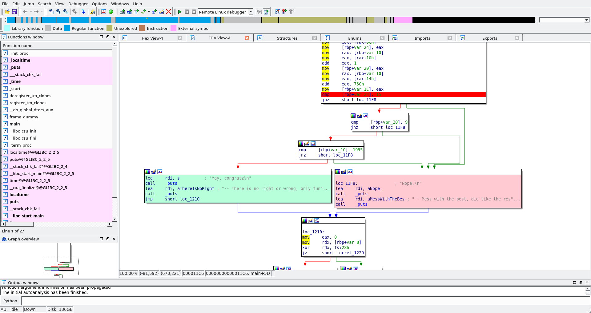
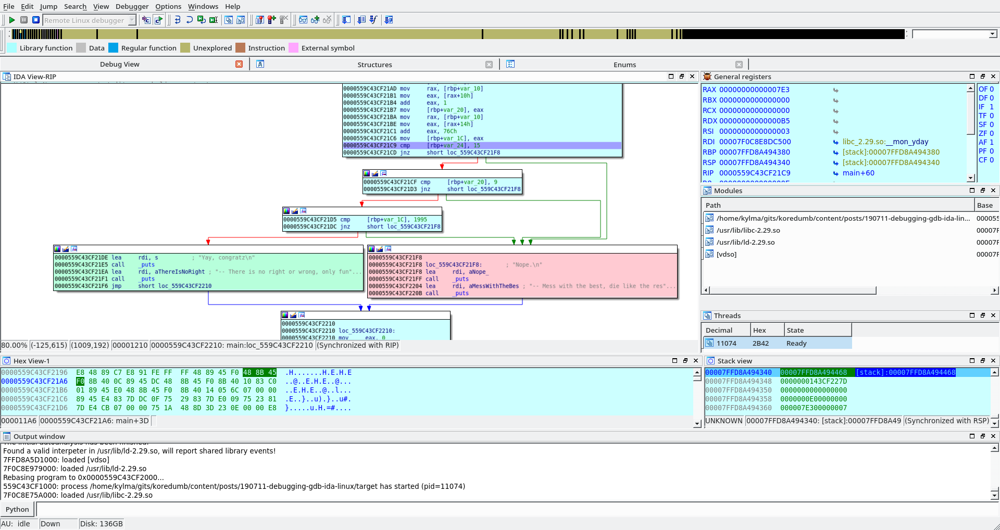
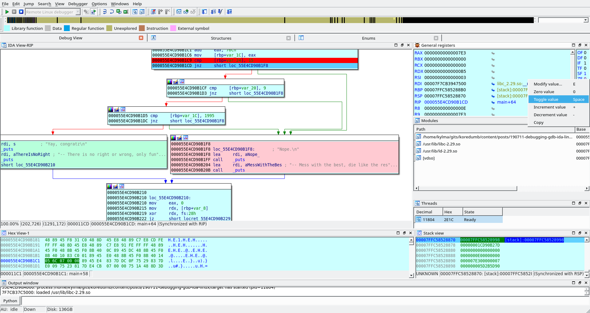

Debugging with GDB in IDA Linux
There are tons of tutorial telling you how to debug with gdb and IDA Windows, but what about IDA Linux eh?
How does debugging work?
IDALinux doesn’t have real local debugging :(( A debug server stub is used to relay information between IDA and the debugger.

And Breakpoints?
Breakpoints are implemented using software interrupts or traps:

More precisely, they are implemented by the trap int 3, ie trap to debugger.
According to the Intel manual:
The INT3 instruction uses a one-byte opcode (CC) and is intended for calling the debug exception handler with a breakpoint exception (#BP). (This one-byte form is useful because it can replace the first byte of any instruction at which a breakpoint is desired, including other one-byte instructions, without overwriting other instructions.)
In effect, it means that when a breakpoint is set, the instruction is saved somewhere (so we can put it back later) and it replaced by 0xCC. When the CPU executes the program and stumble upon the 0xCC, it will generate a trap signal that the debugger will receive and from there, the debugger is in control.
Our Target
/* compile me:
gcc target.c -o target
*/
#include <stdio.h>
#include <stdlib.h>
#include <time.h>
int main(int argc, char* argv[])
{
// get current time
time_t now;
time(&now);
// convert it to calendar time
struct tm *local = localtime(&now);
int day, month, year;
day = local->tm_mday; /* Day of the month (1-31) */
month = local->tm_mon + 1; /* Month (0-11) */
year = local->tm_year + 1900; /* Year - 1900 */
if ((day == 15) && (month == 9) && (year == 1995))
{
printf("Yay, congratz\n\n");
printf("-- There is no right or wrong, only fun and boring.\n");
}
else
{
printf("Nope.\n\n");
printf("-- Mess with the best, die like the rest.\n");
}
return 0;
}
Compile our target binary and execute:
$ gcc target.c -o target && ./target
Nope.
-- Mess with the best, die like the rest.
Oooh, we get the negative message :(( Let’s debug the binary to bypass the check and get the nice message.
Configuration steps
Before you can use GDB, you need to locate your IDA installation:
$ locate idaq64
/home/kylma/ida-6.8/idaq64
Next, go into the dbgsrv directory:
$ cd /home/kylma/ida-6.8/dbgsrv
$ tree .
.
├── android_server
├── android_server_nonpie
├── armlinux_server
├── armuclinux_server
├── dbghelp.dll
├── linux_server
├── linux_serverx64
├── mac_server
├── mac_serverx64
├── symsrv.dll
├── win32_remote.exe
└── win64_remotex64.exe
0 directories, 12 files
Run linux_serverx64:
$ ./linux_serverx64
IDA Linux 64-bit remote debug server(ST) v1.19. Hex-Rays (c) 2004-2015
Listening on port #23946...
Take note of that port number, we will need it later.
Open the binary in IDA:

Select Remote Linux Debugger as debugger:

Then configure the debugger options in Debugger > Process Options, put 127.0.0.1 as Hostname. And make sure the Port matches the one from the console earlier.

Actual Debugging
Everything is now ready! Click on a line in the disassembly output and hit F2, the line should have a red background indicating that a breakpoint has been set on this particular line.

Start the debugging with F9 , the binary will be run from the start until it hits the breakpoint. By default, when you starts the debugging, IDA will switch to the text view, hit space to go back to the graph view.

A few shortcuts are enough to get complete control of the debugger:
- F9: continue until the next breakpoint (or the end of the binary)
- F7: step into
- F8: step over
- F4: run until cursor
Now hit F7 to execute the next instruction: cmp [rbp+var_24], 15. The green arrow below the jnz is now blinking to indicate that execution will follow this path, and it leads to the negative message.
Let’s hijack this! We want to stay on the path to the congratz message. The decision to follow the green arrow depends on the results of the cmp, as it will set (or not) flags like ZF which is used by jnz to decide where we go next.
Right click on the value of the ZF flag and choose Toggle Value:

The red arrow should now be blinking, indicating that the flow of execution has been modified /o/.
Repeat this technique until the green message is executed, the terminal running linux_serverx64 should now display the message of victory:
➔ ./linux_serverx64
IDA Linux 64-bit remote debug server(ST) v1.19. Hex-Rays (c) 2004-2015
Listening on port #23946...
=========================================================
[1] Accepting connection from 127.0.0.1...
Yay, congratz
-- There is no right or wrong, only fun and boring.
[1] Closing connection from 127.0.0.1...
Afterthoughts
- The binary is only checking that the date of your system is equal to 15/09/1995, you can also cheat your way to the victory message by changing the date of your system.
- Hack the planet.
References
Various stuff I read to write this article: